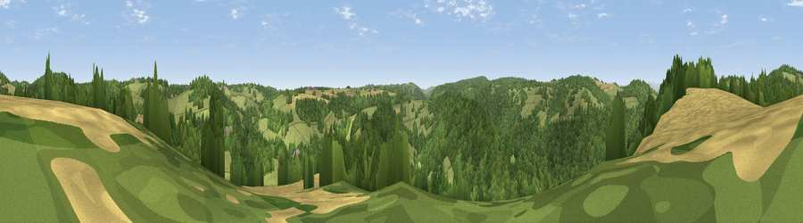

Viewpoint near Redbrook
#31949 in England · top 70% of its area beats it · near RedbrookWhere it is
The exact computed spot (SO 54525 09825). Click the marker for map links.
The view, rendered

A 360° render of this exact spot computed from the terrain model, tree cover and land cover — summer colours, afternoon light, calibrated against photographs of famous viewpoints. Real trees, hedges and buildings will differ in detail.
The panorama
Grey silhouette: terrain skyline in each direction (720 bearings, Earth curvature and refraction included). Dashed green: skyline with trees (+15 m) and buildings (+8 m) as obstacles. Blue strip: how far the ground is visible on each bearing.
Where the view opens
Wedge length = distance to the farthest visible ground on that bearing (vegetation-aware). Rings at 10, 25 and 50 km.
What fills the view
60% woodland · 30% grassland · 10% cropland ·
Angular shares of the visible panorama (visual magnitude), not map area. Landscape diversity 0.40 (0–1 Shannon).
Key numbers
More beautiful places nearby
The staircase of upgrades: each row has a higher view potential than everything closer. Driving times are estimates from straight-line distance, calibrated against real road routing — check an actual route before setting out.
| Place | Direction | Drive | Score |
|---|---|---|---|
| Viewpoint near Redbrook | NW · 0 km | ~2 min | 44.9 |
| Viewpoint near Staunton | NNE · 2 km | ~6 min | 58.9 |
| Buck Stone | N · 2 km | ~6 min | 71.0 |
| Viewpoint near Welsh Newton | NW · 7 km | ~15 min | 72.0 |
| Viewpoint near Goodrich | NNE · 9 km | ~18 min | 74.0 |
| Skenchill | NW · 11 km | ~20 min | 75.8 |
| Chase Wood Hill | NNE · 14 km | ~25 min | 77.6 |
| Garway Hill | NW · 19 km | ~32 min | 84.6 |
51.78523, -2.66065 · source: screening · position refined by local search. Computed location — check access rights before visiting.